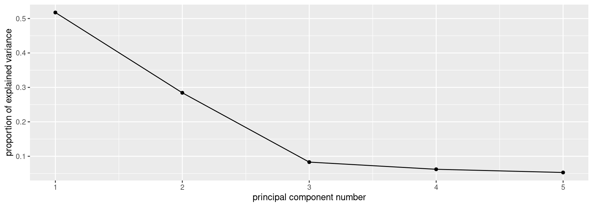
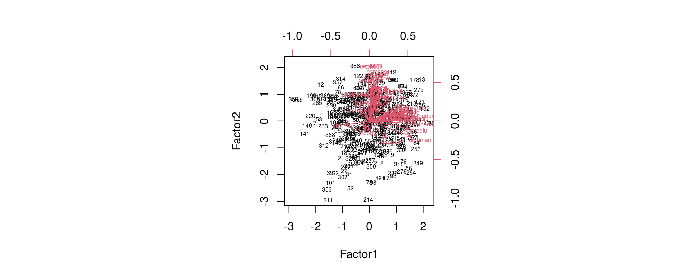

Factor analysis
Vs. principal components
Principal components:
Purely mathematical.
Find eigenvalues, eigenvectors of correlation matrix.
No testing whether observed components reproducible, or even probability model behind it.
Factor analysis:
some way towards fixing this (get test of appropriateness)
In factor analysis, each variable modelled as: “common factor” (eg. verbal ability) and “specific factor” (left over).
Choose the common factors to “best” reproduce pattern seen in correlation matrix.
Iterative procedure, different answer from principal components.
Packages
Example
145 children given 5 tests, called PARA, SENT, WORD, ADD and DOTS. 3 linguistic tasks (paragraph comprehension, sentence completion and word meaning), 2 mathematical ones (addition and counting dots).
Correlation matrix of scores on the tests:
para 1 0.722 0.714 0.203 0.095
sent 0.722 1 0.685 0.246 0.181
word 0.714 0.685 1 0.170 0.113
add 0.203 0.246 0.170 1 0.585
dots 0.095 0.181 0.113 0.585 1
- Is there small number of underlying “constructs” (unobservable) that explains this pattern of correlations?
To start: principal components
Using correlation matrix. Read that first:
# A tibble: 5 × 6
test para sent word add dots
<chr> <dbl> <dbl> <dbl> <dbl> <dbl>
1 para 1 0.722 0.714 0.203 0.095
2 sent 0.722 1 0.685 0.246 0.181
3 word 0.714 0.685 1 0.17 0.113
4 add 0.203 0.246 0.17 1 0.585
5 dots 0.095 0.181 0.113 0.585 1 Principal components on correlation matrix
Turn into R matrix, using column test as column names:
Principal components:
I used kids.0 here since I want kids.1 and kids.2 later.
Scree plot
Principal component results
- Need 2 components. Loadings:
Loadings:
Comp.1 Comp.2 Comp.3 Comp.4 Comp.5
para 0.534 0.245 0.114 0.795
sent 0.542 0.164 0.660 -0.489
word 0.523 0.247 -0.144 -0.738 -0.316
add 0.297 -0.627 0.707
dots 0.241 -0.678 -0.680 0.143
Comp.1 Comp.2 Comp.3 Comp.4 Comp.5
SS loadings 1.0 1.0 1.0 1.0 1.0
Proportion Var 0.2 0.2 0.2 0.2 0.2
Cumulative Var 0.2 0.4 0.6 0.8 1.0Factor analysis
Specify number of factors first, get solution with exactly that many factors.
Includes hypothesis test, need to specify how many children wrote the tests.
Works from correlation matrix via
covmator actual data, likeprincomp.Introduces extra feature, rotation, to make interpretation of loadings (factor-variable relation) easier.
Factor analysis for the kids data
Create “covariance list” to include number of children who wrote the tests.
Feed this into
factanal, specifying how many factors (2).Start with the matrix we made before.
Uniquenesses
Uniquenesses say how “unique” a variable is (size of specific factor). Small uniqueness means that the variable is summarized by a factor (good).
Very large uniquenesses are bad;
add’s uniqueness is largest but not large enough to be worried about.Also see “communality” for this idea, where large is good and small is bad.
Loadings
Loadings:
Factor1 Factor2
para 0.867
sent 0.820 0.166
word 0.816
add 0.167 0.631
dots 0.918
Factor1 Factor2
SS loadings 2.119 1.282
Proportion Var 0.424 0.256
Cumulative Var 0.424 0.680- Loadings show how each factor depends on variables. Blanks indicate “small”, less than 0.1.
Comments
Factor 1 clearly the “linguistic” tasks, factor 2 clearly the “mathematical” ones.
Two factors together explain 68% of variability (like regression R-squared).
Which variables belong to which factor is much clearer than with principal components.
Are 2 factors enough?
P-value not small, so 2 factors OK.
1 factor
objective
58.16534 [1] 5 objective
2.907856e-11 1 factor rejected (P-value small). Definitely need more than 1.
Places rated, again
- Read data, transform, rerun principal components, get biplot:
- This is all exactly as for principal components (nothing new here).
The biplot

Comments
- Most of the criteria are part of components 1 and 2.
- If we can rotate the arrows counterclockwise:
- economy and crime would point straight up
- part of component 2 only
- health and education would point to the right
- part of component 1 only
- economy and crime would point straight up
- would be easier to see which variables belong to which component.
- Factor analysis includes a rotation to help with interpretation.
Factor analysis
- Have to pick a number of factors first.
- Do this by running principal components and looking at scree plot.
- In this case, 3 factors seemed good (revisit later):
- There are different ways to get factor scores. These called “regression” scores.
A bad biplot

Comments
- I have to find a way to make a better biplot!
- Some of the variables now point straight up and some straight across (if you look carefully for the red arrows among the black points).
- This should make the factors more interpretable than the components were.
Factor loadings
Loadings:
Factor1 Factor2 Factor3
climate 0.994
housing 0.360 0.482 0.229
health 0.884 0.164
crime 0.115 0.400 0.205
trans 0.414 0.460
educate 0.511
arts 0.655 0.552 0.102
recreate 0.148 0.714
econ 0.318 -0.114
Factor1 Factor2 Factor3
SS loadings 1.814 1.551 1.120
Proportion Var 0.202 0.172 0.124
Cumulative Var 0.202 0.374 0.498Comments on loadings
- These are at least somewhat clearer than for the principal components:
- Factor 1: health, education, arts: “well-being”
- Factor 2: housing, transportation, arts (again), recreation: “places to be”
- Factor 3: climate (only): “climate”
- In this analysis, economic factors don’t seem to be important.
Factor scores
- Make a dataframe with the city IDs and factor scores:
- Make percentile ranks again (for checking):
Highest scores on factor 1, “well-being”:
- for the top 4 places:
Check percentile ranks for factor 1
# A tibble: 4 × 4
id health educate arts
<dbl> <dbl> <dbl> <dbl>
1 65 0.997 0.963 0.997
2 213 1 0.723 1
3 234 0.991 1 0.985
4 314 0.985 0.994 0.991- These are definitely high on the well-being variables.
- City #213 is not so high on education, but is highest of all on the others.
Highest scores on factor 2, “places to be”:
Check percentile ranks for factor 2
# A tibble: 4 × 5
id housing trans arts recreate
<dbl> <dbl> <dbl> <dbl> <dbl>
1 12 0.933 0.729 0.604 0.896
2 44 0.927 0.963 0.735 0.988
3 168 0.832 0.872 0.442 0.979
4 318 0.881 0.744 0.668 0.963- These are definitely high on housing and recreation.
- Some are (very) high on transportation, but not so much on arts.
- Could look at more cities to see if #168 being low on arts is a fluke.
Highest scores on factor 3, “climate”:
Check percentile ranks for factor 3
# A tibble: 4 × 2
id climate
<dbl> <dbl>
1 218 0.997
2 227 0.991
3 269 0.994
4 270 0.997This is very clear.
Uniquenesses
- We said earlier that the economy was not part of any of our factors:
climate housing health crime trans educate arts recreate
0.0050000 0.5859175 0.1854084 0.7842407 0.6165449 0.7351921 0.2554663 0.4618143
econ
0.8856382 - The higher the uniqueness, the less the variable concerned is part of any of our factors (and that maybe another factor is needed to accommodate it).
- This includes economy and maybe crime.
Test of significance
We can test whether the three factors that we have is enough, or whether we need more to describe our data:
- 3 factors are not enough.
- What would 5 factors look like?
Five factors
Loadings:
Factor1 Factor2 Factor3 Factor4 Factor5
climate 0.131 0.559
housing 0.286 0.505 0.289 -0.113 0.475
health 0.847 0.214 0.187
crime 0.196 0.143 0.948 0.181
trans 0.389 0.515 0.175
educate 0.534
arts 0.611 0.564 0.172 0.145
recreate 0.705 0.115 0.136
econ 0.978 0.135
Factor1 Factor2 Factor3 Factor4 Factor5
SS loadings 1.628 1.436 1.087 1.023 0.658
Proportion Var 0.181 0.160 0.121 0.114 0.073
Cumulative Var 0.181 0.340 0.461 0.575 0.648Comments 1/2
- On (new) 5 factors:
- Factor 1 is health, education, arts: same as factor 1 before.
- Factor 2 is housing, transportation, arts, recreation: as factor 2 before.
- Factor 3 is economy.
- Factor 4 is crime.
- Factor 5 is climate and housing: like factor 3 before.
Comments 2/2
- The two added factors include the two “missing” variables.
- Is this now enough?
- No. My guess is that the authors of Places Rated chose their 9 criteria to capture different aspects of what makes a city good or bad to live in, and so it was too much to hope that a small number of factors would come out of these.
A bigger example: BEM sex role inventory
369 women asked to rate themselves on 60 traits, like “self-reliant” or “shy”.
Rating 1 “never or almost never true of me” to 7 ``always or almost always true of me’’.
60 personality traits is a lot. Can we find a smaller number of factors that capture aspects of personality?
The whole BEM sex role inventory on next page.
The whole inventory

Some of the data
# A tibble: 369 × 45
subno helpful reliant defbel yielding cheerful indpt athlet shy assert
<dbl> <dbl> <dbl> <dbl> <dbl> <dbl> <dbl> <dbl> <dbl> <dbl>
1 1 7 7 5 5 7 7 7 1 7
2 2 5 6 6 6 2 3 3 3 4
3 3 7 6 4 4 5 5 2 3 4
4 4 6 6 7 4 6 6 3 4 4
5 5 6 6 7 4 7 7 7 2 7
6 7 5 6 7 4 6 6 2 4 4
7 8 6 4 6 6 6 3 1 3 3
8 9 7 6 7 5 6 7 5 2 5
9 10 7 6 6 4 4 5 2 2 5
10 11 7 4 7 4 7 5 2 1 5
# ℹ 359 more rows
# ℹ 35 more variables: strpers <dbl>, forceful <dbl>, affect <dbl>,
# flatter <dbl>, loyal <dbl>, analyt <dbl>, feminine <dbl>, sympathy <dbl>,
# moody <dbl>, sensitiv <dbl>, undstand <dbl>, compass <dbl>, leaderab <dbl>,
# soothe <dbl>, risk <dbl>, decide <dbl>, selfsuff <dbl>, conscien <dbl>,
# dominant <dbl>, masculin <dbl>, stand <dbl>, happy <dbl>, softspok <dbl>,
# warm <dbl>, truthful <dbl>, tender <dbl>, gullible <dbl>, leadact <dbl>, …Principal components first
to decide on number of factors:
The scree plot

- No obvious elbow.
Zoom in to search for elbow
Possible elbows at 3 (2 factors) and 6 (5):

but is 2 really good?
Importance of components:
Comp.1 Comp.2 Comp.3 Comp.4 Comp.5
Standard deviation 2.7444993 2.2405789 1.55049106 1.43886350 1.30318840
Proportion of Variance 0.1711881 0.1140953 0.05463688 0.04705291 0.03859773
Cumulative Proportion 0.1711881 0.2852834 0.33992029 0.38697320 0.42557093
Comp.6 Comp.7 Comp.8 Comp.9 Comp.10
Standard deviation 1.18837867 1.15919129 1.07838912 1.07120568 1.04901318
Proportion of Variance 0.03209645 0.03053919 0.02643007 0.02607913 0.02500974
Cumulative Proportion 0.45766738 0.48820657 0.51463664 0.54071577 0.56572551
Comp.11 Comp.12 Comp.13 Comp.14 Comp.15
Standard deviation 1.03848656 1.00152287 0.97753974 0.95697572 0.9287543
Proportion of Variance 0.02451033 0.02279655 0.02171782 0.02081369 0.0196042
Cumulative Proportion 0.59023584 0.61303238 0.63475020 0.65556390 0.6751681
Comp.16 Comp.17 Comp.18 Comp.19 Comp.20
Standard deviation 0.92262649 0.90585705 0.8788668 0.86757525 0.84269120
Proportion of Variance 0.01934636 0.01864948 0.0175547 0.01710652 0.01613928
Cumulative Proportion 0.69451445 0.71316392 0.7307186 0.74782514 0.76396443
Comp.21 Comp.22 Comp.23 Comp.24 Comp.25
Standard deviation 0.83124925 0.80564654 0.78975423 0.78100835 0.77852606
Proportion of Variance 0.01570398 0.01475151 0.01417527 0.01386305 0.01377506
Cumulative Proportion 0.77966841 0.79441992 0.80859519 0.82245823 0.83623330
Comp.26 Comp.27 Comp.28 Comp.29 Comp.30
Standard deviation 0.74969868 0.74137885 0.72343693 0.71457305 0.70358645
Proportion of Variance 0.01277382 0.01249188 0.01189457 0.01160488 0.01125077
Cumulative Proportion 0.84900712 0.86149899 0.87339356 0.88499844 0.89624921
Comp.31 Comp.32 Comp.33 Comp.34
Standard deviation 0.69022738 0.654861232 0.640339974 0.63179848
Proportion of Variance 0.01082759 0.009746437 0.009318984 0.00907203
Cumulative Proportion 0.90707680 0.916823235 0.926142219 0.93521425
Comp.35 Comp.36 Comp.37 Comp.38
Standard deviation 0.616621295 0.602404917 0.570025368 0.560881809
Proportion of Variance 0.008641405 0.008247538 0.007384748 0.007149736
Cumulative Proportion 0.943855654 0.952103192 0.959487940 0.966637677
Comp.39 Comp.40 Comp.41 Comp.42
Standard deviation 0.538149460 0.530277613 0.512370708 0.505662309
Proportion of Variance 0.006581928 0.006390781 0.005966449 0.005811236
Cumulative Proportion 0.973219605 0.979610386 0.985576834 0.991388070
Comp.43 Comp.44
Standard deviation 0.480413465 0.384873772
Proportion of Variance 0.005245389 0.003366541
Cumulative Proportion 0.996633459 1.000000000Comments
Want overall fraction of variance explained (``cumulative proportion’’) to be reasonably high.
2 factors, 28.5%. Terrible!
Even 56% (10 factors) not that good!
Have to live with that.
Biplot

Comments
Ignore individuals for now.
Most variables point to 1 o’clock or 4 o’clock.
Suggests factor analysis with rotation will get interpretable factors (rotate to 12 o’clock and 3 o’clock, for example).
Try for 2-factor solution (rough interpretation, will be bad):
- Show output in pieces (just print
bem.2to see all of it).
Uniquenesses, sorted
leaderab leadact warm tender dominant gentle
0.4091894 0.4166153 0.4764762 0.4928919 0.4942909 0.5064551
forceful strpers compass stand undstand assert
0.5631857 0.5679398 0.5937073 0.6024001 0.6194392 0.6329347
soothe affect decide selfsuff sympathy indpt
0.6596103 0.6616625 0.6938578 0.7210246 0.7231450 0.7282742
helpful defbel risk reliant individ compete
0.7598223 0.7748448 0.7789761 0.7808058 0.7941998 0.7942910
conscien happy sensitiv loyal ambitiou shy
0.7974820 0.8008966 0.8018851 0.8035264 0.8101599 0.8239496
softspok cheerful masculin yielding feminine truthful
0.8339058 0.8394916 0.8453368 0.8688473 0.8829927 0.8889983
lovchil analyt athlet flatter gullible moody
0.8924392 0.8968744 0.9229702 0.9409500 0.9583435 0.9730607
childlik foullang
0.9800360 0.9821662 Comments
Mostly high or very high (bad).
Some smaller, eg.: Leadership ability (0.409), Acts like leader (0.417), Warm (0.476), Tender (0.493).
Smaller uniquenesses captured by one of our two factors.
Larger uniquenesses are not: need more factors to capture them.
Factor loadings, some
Loadings:
Factor1 Factor2
helpful 0.314 0.376
reliant 0.453 0.117
defbel 0.434 0.193
yielding -0.131 0.338
cheerful 0.152 0.371
indpt 0.521
athlet 0.267
shy -0.414
assert 0.605
strpers 0.657
forceful 0.649 -0.126
affect 0.178 0.554
flatter 0.223
loyal 0.151 0.417
analyt 0.295 0.127
feminine 0.113 0.323
sympathy 0.526
moody -0.162
sensitiv 0.135 0.424
undstand 0.610
compass 0.114 0.627
leaderab 0.765
soothe 0.580
risk 0.442 0.161
decide 0.542 0.113
selfsuff 0.511 0.134
conscien 0.328 0.308
dominant 0.668 -0.245
masculin 0.276 -0.280
stand 0.607 0.172
happy 0.119 0.430
softspok -0.230 0.336
warm 0.719
truthful 0.109 0.315
tender 0.710
gullible -0.153 0.135
leadact 0.763
childlik -0.101
individ 0.445
foullang 0.133
lovchil 0.327
compete 0.450
ambitiou 0.414 0.137
gentle 0.702
Factor1 Factor2
SS loadings 6.083 5.127
Proportion Var 0.138 0.117
Cumulative Var 0.138 0.255Making a data frame
There are too many to read easily, so make a data frame. A bit tricky:
bem.2$loadings %>%
unclass() %>%
as_tibble() %>%
mutate(trait = rownames(bem.2$loadings)) -> loadings
loadings %>% slice(1:8)# A tibble: 8 × 3
Factor1 Factor2 trait
<dbl> <dbl> <chr>
1 0.314 0.376 helpful
2 0.453 0.117 reliant
3 0.434 0.193 defbel
4 -0.131 0.338 yielding
5 0.152 0.371 cheerful
6 0.521 0.00587 indpt
7 0.267 0.0755 athlet
8 -0.414 -0.0654 shy Pick out the big ones on factor 1
Arbitrarily defining \(>0.4\) or \(<-0.4\) as “big”:
# A tibble: 17 × 3
Factor1 Factor2 trait
<dbl> <dbl> <chr>
1 0.453 0.117 reliant
2 0.434 0.193 defbel
3 0.521 0.00587 indpt
4 -0.414 -0.0654 shy
5 0.605 0.0330 assert
6 0.657 0.0208 strpers
7 0.649 -0.126 forceful
8 0.765 0.0695 leaderab
9 0.442 0.161 risk
10 0.542 0.113 decide
11 0.511 0.134 selfsuff
12 0.668 -0.245 dominant
13 0.607 0.172 stand
14 0.763 -0.0407 leadact
15 0.445 0.0891 individ
16 0.450 0.0532 compete
17 0.414 0.137 ambitiouFactor 2, the big ones
# A tibble: 11 × 3
Factor1 Factor2 trait
<dbl> <dbl> <chr>
1 0.178 0.554 affect
2 0.151 0.417 loyal
3 0.0230 0.526 sympathy
4 0.135 0.424 sensitiv
5 0.0911 0.610 undstand
6 0.114 0.627 compass
7 0.0606 0.580 soothe
8 0.119 0.430 happy
9 0.0796 0.719 warm
10 0.0511 0.710 tender
11 -0.0187 0.702 gentle Plotting the two factors
A bi-plot, this time with the variables reduced in size. Looking for unusual individuals.
Have to run
factanalagain to get factor scores for plotting.
- Numbers on plot are row numbers of
bemdata frame.
The (awful) biplot
Comments
Variables mostly up (“feminine”) and right (“masculine”), accomplished by rotation.
Some unusual individuals: 311, 214 (low on factor 2), 366 (high on factor 2), 359, 258 (low on factor 1), 230 (high on factor 1).
Individual 366
Rows: 1
Columns: 45
$ subno <dbl> 755
$ helpful <dbl> 7
$ reliant <dbl> 7
$ defbel <dbl> 5
$ yielding <dbl> 7
$ cheerful <dbl> 7
$ indpt <dbl> 7
$ athlet <dbl> 7
$ shy <dbl> 2
$ assert <dbl> 1
$ strpers <dbl> 3
$ forceful <dbl> 1
$ affect <dbl> 7
$ flatter <dbl> 9
$ loyal <dbl> 7
$ analyt <dbl> 7
$ feminine <dbl> 7
$ sympathy <dbl> 7
$ moody <dbl> 1
$ sensitiv <dbl> 7
$ undstand <dbl> 7
$ compass <dbl> 6
$ leaderab <dbl> 3
$ soothe <dbl> 7
$ risk <dbl> 7
$ decide <dbl> 7
$ selfsuff <dbl> 7
$ conscien <dbl> 7
$ dominant <dbl> 1
$ masculin <dbl> 1
$ stand <dbl> 7
$ happy <dbl> 7
$ softspok <dbl> 7
$ warm <dbl> 7
$ truthful <dbl> 7
$ tender <dbl> 7
$ gullible <dbl> 1
$ leadact <dbl> 2
$ childlik <dbl> 1
$ individ <dbl> 5
$ foullang <dbl> 7
$ lovchil <dbl> 7
$ compete <dbl> 7
$ ambitiou <dbl> 7
$ gentle <dbl> 7Comments
Individual 366 high on factor 2, but hard to see which traits should have high scores (unless we remember).
Idea 1: use percentile ranks as before.
Idea 2: Rating scale is easy to interpret. So tidy original data frame to make easier to look things up.
Tidying original data
bem %>%
ungroup() %>%
mutate(row = row_number()) %>%
pivot_longer(c(-subno, -row), names_to="trait",
values_to="score") -> bem_tidy
bem_tidy# A tibble: 16,236 × 4
subno row trait score
<dbl> <int> <chr> <dbl>
1 1 1 helpful 7
2 1 1 reliant 7
3 1 1 defbel 5
4 1 1 yielding 5
5 1 1 cheerful 7
6 1 1 indpt 7
7 1 1 athlet 7
8 1 1 shy 1
9 1 1 assert 7
10 1 1 strpers 7
# ℹ 16,226 more rowsRecall data frame of loadings
# A tibble: 10 × 3
Factor1 Factor2 trait
<dbl> <dbl> <chr>
1 0.314 0.376 helpful
2 0.453 0.117 reliant
3 0.434 0.193 defbel
4 -0.131 0.338 yielding
5 0.152 0.371 cheerful
6 0.521 0.00587 indpt
7 0.267 0.0755 athlet
8 -0.414 -0.0654 shy
9 0.605 0.0330 assert
10 0.657 0.0208 strpers Want to add the factor scores for each trait to our tidy data frame bem_tidy. This is a left-join (over), matching on the column trait that is in both data frames (thus, the default):
Looking up loadings
# A tibble: 12 × 6
subno row trait score Factor1 Factor2
<dbl> <int> <chr> <dbl> <dbl> <dbl>
1 231 129 ambitiou 6 0.414 0.137
2 272 160 sympathy 7 0.0230 0.526
3 3 3 forceful 3 0.649 -0.126
4 501 288 helpful 7 0.314 0.376
5 402 228 reliant 6 0.453 0.117
6 370 215 shy 2 -0.414 -0.0654
7 501 288 undstand 6 0.0911 0.610
8 687 352 affect 7 0.178 0.554
9 234 131 feminine 6 0.113 0.323
10 496 283 decide 4 0.542 0.113
11 228 126 forceful 6 0.649 -0.126
12 509 294 lovchil 7 -0.0271 0.327 Individual 366, high on Factor 2
So now pick out the rows of the tidy data frame that belong to individual 366 (row=366) and for which the Factor2 score exceeds 0.4 in absolute value (our “big” from before):
# A tibble: 11 × 6
subno row trait score Factor1 Factor2
<dbl> <int> <chr> <dbl> <dbl> <dbl>
1 755 366 affect 7 0.178 0.554
2 755 366 loyal 7 0.151 0.417
3 755 366 sympathy 7 0.0230 0.526
4 755 366 sensitiv 7 0.135 0.424
5 755 366 undstand 7 0.0911 0.610
6 755 366 compass 6 0.114 0.627
7 755 366 soothe 7 0.0606 0.580
8 755 366 happy 7 0.119 0.430
9 755 366 warm 7 0.0796 0.719
10 755 366 tender 7 0.0511 0.710
11 755 366 gentle 7 -0.0187 0.702As expected, high scorer on these.
Several individuals
Rows 311 and 214 were low on Factor 2, so their scores should be low. Can we do them all at once?
# A tibble: 33 × 6
subno row trait score Factor1 Factor2
<dbl> <int> <chr> <dbl> <dbl> <dbl>
1 369 214 affect 1 0.178 0.554
2 369 214 loyal 7 0.151 0.417
3 369 214 sympathy 4 0.0230 0.526
4 369 214 sensitiv 7 0.135 0.424
5 369 214 undstand 5 0.0911 0.610
6 369 214 compass 5 0.114 0.627
7 369 214 soothe 3 0.0606 0.580
8 369 214 happy 4 0.119 0.430
9 369 214 warm 1 0.0796 0.719
10 369 214 tender 3 0.0511 0.710
# ℹ 23 more rowsCan we display each individual in own column?
Individual by column
Un-tidy, that is, pivot_wider:
bem_tidy %>%
filter(
row %in% c(366, 311, 214),
abs(Factor2) > 0.4
) %>%
select(-subno, -Factor1, -Factor2) %>%
pivot_wider(names_from=row, values_from=score)# A tibble: 11 × 4
trait `214` `311` `366`
<chr> <dbl> <dbl> <dbl>
1 affect 1 5 7
2 loyal 7 4 7
3 sympathy 4 4 7
4 sensitiv 7 4 7
5 undstand 5 3 7
6 compass 5 4 6
7 soothe 3 4 7
8 happy 4 3 7
9 warm 1 3 7
10 tender 3 4 7
11 gentle 2 3 7366 high, 311 middling, 214 (sometimes) low.
Individuals 230, 258, 359
These were high, low, low on factor 1. Adapt code:
bem_tidy %>%
filter(row %in% c(359, 258, 230), abs(Factor1) > 0.4) %>%
select(-subno, -Factor1, -Factor2) %>%
pivot_wider(names_from=row, values_from=score)# A tibble: 17 × 4
trait `230` `258` `359`
<chr> <dbl> <dbl> <dbl>
1 reliant 7 4 1
2 defbel 7 1 1
3 indpt 7 7 1
4 shy 2 7 5
5 assert 7 3 1
6 strpers 7 1 3
7 forceful 7 1 1
8 leaderab 7 1 1
9 risk 7 5 7
10 decide 7 1 2
11 selfsuff 7 4 1
12 dominant 7 1 1
13 stand 7 1 6
14 leadact 7 1 1
15 individ 7 3 3
16 compete 6 2 1
17 ambitiou 7 2 4Is 2 factors enough?
Suspect not:
2 factors resoundingly rejected. Need more. Have to go all the way to 15 factors to not reject:
Even then, only just over 50% of variability explained.
What’s important in 15 factors?
Let’s take a look at the important things in those 15 factors.
Get 15-factor loadings into a data frame, as before:
- then show the highest few loadings on each factor.
Factor 1 (of 15)
# A tibble: 10 × 2
Factor1 trait
<dbl> <chr>
1 0.813 compass
2 0.676 undstand
3 0.661 sympathy
4 0.641 sensitiv
5 0.597 soothe
6 0.348 warm
7 0.280 gentle
8 0.279 tender
9 0.250 helpful
10 0.234 conscienCompassionate, understanding, sympathetic, soothing: thoughtful of others.
Factor 2
# A tibble: 10 × 2
Factor2 trait
<dbl> <chr>
1 0.762 strpers
2 0.716 forceful
3 0.698 assert
4 0.504 dominant
5 0.393 leaderab
6 0.367 stand
7 0.351 leadact
8 -0.313 softspok
9 -0.287 shy
10 0.260 analyt Strong personality, forceful, assertive, dominant: getting ahead.
Factor 3
# A tibble: 10 × 2
Factor3 trait
<dbl> <chr>
1 0.670 reliant
2 0.648 selfsuff
3 0.620 indpt
4 0.390 helpful
5 -0.339 gullible
6 0.333 individ
7 0.332 decide
8 0.329 conscien
9 0.288 leaderab
10 0.280 defbel Self-reliant, self-sufficient, independent: going it alone.
Factor 4
# A tibble: 10 × 2
Factor4 trait
<dbl> <chr>
1 0.696 gentle
2 0.692 tender
3 0.599 warm
4 0.447 affect
5 0.394 softspok
6 0.278 lovchil
7 0.244 undstand
8 0.244 happy
9 0.213 loyal
10 0.202 soothe Gentle, tender, warm (affectionate): caring for others.
Factor 5
# A tibble: 10 × 2
Factor5 trait
<dbl> <chr>
1 0.696 compete
2 0.674 ambitiou
3 0.345 risk
4 0.342 individ
5 0.281 athlet
6 0.270 leaderab
7 0.245 decide
8 0.206 dominant
9 0.193 leadact
10 0.185 strpers Ambitious, competitive (with a bit of risk-taking and individualism): Being the best.
Factor 6
# A tibble: 10 × 2
Factor6 trait
<dbl> <chr>
1 0.868 leadact
2 0.608 leaderab
3 0.338 dominant
4 0.201 forceful
5 -0.192 shy
6 0.179 risk
7 0.170 masculin
8 0.164 decide
9 0.159 compete
10 0.147 athlet Acts like a leader, leadership ability (with a bit of Dominant): Taking charge.
Factor 7
# A tibble: 10 × 2
Factor7 trait
<dbl> <chr>
1 0.670 happy
2 0.667 cheerful
3 -0.522 moody
4 0.219 athlet
5 0.213 warm
6 0.172 gentle
7 -0.164 masculin
8 0.160 reliant
9 0.147 yielding
10 0.141 lovchil Happy and cheerful.
Factor 8
# A tibble: 10 × 2
Factor8 trait
<dbl> <chr>
1 0.630 affect
2 0.516 flatter
3 -0.251 softspok
4 0.221 warm
5 0.188 tender
6 0.185 strpers
7 -0.180 shy
8 0.180 compete
9 0.166 loyal
10 0.155 helpful Affectionate, flattering: Making others feel good.
Factor 9
# A tibble: 10 × 2
Factor9 trait
<dbl> <chr>
1 0.863 stand
2 0.340 defbel
3 0.245 individ
4 0.194 risk
5 -0.172 shy
6 0.171 decide
7 0.120 assert
8 0.116 conscien
9 0.112 analyt
10 -0.112 gullibleTaking a stand.
Factor 10
# A tibble: 10 × 2
Factor10 trait
<dbl> <chr>
1 0.808 feminine
2 -0.264 masculin
3 0.245 softspok
4 0.232 conscien
5 0.202 selfsuff
6 0.176 yielding
7 0.141 gentle
8 0.113 flatter
9 0.109 decide
10 -0.0941 lovchil Feminine. (A little bit of not-masculine!)
Factor 11
# A tibble: 10 × 2
Factor11 trait
<dbl> <chr>
1 0.916 loyal
2 0.189 affect
3 0.159 truthful
4 0.125 helpful
5 0.104 analyt
6 0.101 tender
7 0.0972 lovchil
8 0.0964 gullible
9 0.0935 cheerful
10 0.0821 conscienLoyal.
Factor 12
# A tibble: 10 × 2
Factor12 trait
<dbl> <chr>
1 0.611 childlik
2 -0.285 selfsuff
3 -0.279 conscien
4 0.259 moody
5 0.201 shy
6 -0.167 decide
7 0.154 masculin
8 0.146 dominant
9 0.138 compass
10 -0.130 leaderabChildlike. (With a bit of moody, shy, not-self-sufficient, not-conscientious.)
Factor 13
# A tibble: 10 × 2
Factor13 trait
<dbl> <chr>
1 0.573 truthful
2 -0.278 gullible
3 0.263 happy
4 0.189 warm
5 -0.167 shy
6 0.165 loyal
7 -0.144 yielding
8 -0.130 assert
9 0.114 defbel
10 -0.111 lovchil Truthful. (With a bit of happy and not-gullible.)
Factor 14
# A tibble: 10 × 2
Factor14 trait
<dbl> <chr>
1 0.443 decide
2 0.237 selfsuff
3 0.195 forceful
4 -0.186 softspok
5 0.160 risk
6 -0.148 strpers
7 0.146 dominant
8 0.128 happy
9 0.115 compass
10 0.105 masculinDecisive. (With a bit of self-sufficient and not-soft-spoken.)
Factor 15
# A tibble: 10 × 2
Factor15 trait
<dbl> <chr>
1 -0.324 compass
2 0.247 athlet
3 0.229 sensitiv
4 0.199 risk
5 -0.164 affect
6 0.163 moody
7 -0.112 individ
8 0.110 warm
9 0.105 cheerful
10 0.101 reliant Not-compassionate, athletic, sensitive: A mixed bag. (“Cares about self”?)
Anything left out? Uniquenesses
# A tibble: 10 × 2
quality uniq
<chr> <dbl>
1 foullang 0.914
2 lovchil 0.824
3 analyt 0.812
4 yielding 0.791
5 masculin 0.723
6 athlet 0.722
7 shy 0.703
8 gullible 0.700
9 flatter 0.663
10 helpful 0.652Uses foul language especially, also loves children and analytical. So could use even more factors.
Comments
First component has a bit of everything, though especially the first three tests.
Second component rather more clearly
addanddots.No scores, plots since no actual data.
See how factor analysis compares on these data.